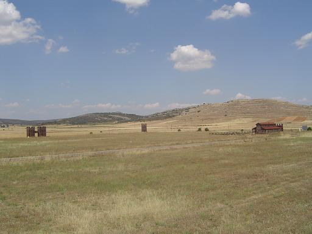
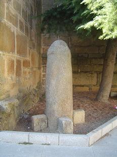
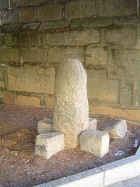

|
PETAVONIUM |
||||||||||||||||||||||
|

Las localidades de San Pedro de la Viña, Rosinos de Vidriales y Santibañez de Vidriales conforman un triangulo en cuyo centro se localiza el campamento romano de Petavonium. Esta zona en la cabecera del arroyo Almucera, se identifica con la mansio de Petavonium. El solar que alberga las ruinas del campamento militar romano, se conoce popularmente como Sansueña, y esta localizado en el término municipal de Rosinos de Vidriales.
El asentamiento en esta zona de un contingente militar romano estuvo motivado por el interés estratégico de la zona, cercana al área donde se desarrollaron las guerras contra los cántabros (26 al 19 a.e.c.). Esta campaña militar fue dirigida por el Emperador Augusto, y aunque Roma dio por finalizada la guerra en el 19 a.e.c. las escaramuzas y enfrentamientos continuaron. También es un lugar estratégico en la Vía de la Plata y esta cercano al complejo minero de Las Médulas.
Desde este campamento la legión desempaña diversas tareas de control, pacificación y administración del territorio y el entrenamiento de tropas auxiliares reclutadas en los pueblos de la zona. De este cuartel sabemos que ocupaba una zona de más de 17 hectáreas y se encontraba rodeado de una muralla y doble foso. En el año 63 la legión parte de Hispania para combatir en la frontera del Danubio, quedando el campamento deshabitado durante medio siglo.
A finales del siglo I en el interior del antiguo campamento se instala una unidad auxiliar de caballería, compuesta por unos 500 jinetes hispanos con ciudadanía romana, el Ala II Flavia, dedicada exclusivamente a la vigilancia del comercio de oro extraído de las minas del norte. El nuevo campamento de unas 4,5 hectáreas, se levanta en el interior del ya existente, al que pertenecen los resto visibles, permaneció en uso al menos hasta el siglo III, solo ocupa una cuarta parte del anterior. El antiguo campamento fue destruido en su totalidad o no se aprovecho nada, excepto la muralla exterior. Supuestamente porque los edificios hallados en el nuevo campamento están pegados a la nueva muralla y no hay sitio para realizar la ronda.
Se construyó una nueva muralla de piedra reforzada, realizada de muros de mampostería trabada con argamasa de cal; con torres en el perímetro y en las cuatro puertas orientadas a los cuatro puntos cardinales y esta rodeada de un foso de más de cuatro metros de anchura. La muralla estaba inclinada entre 15º y 30º sobre la vertical.
También se han descubierto restos de varios edificios relacionados con la residencia y las actividades de la tropa (artesanía, cocina, almacén de alimentos, etc). En concreto se conocen una serie de habitaciones articuladas por dos calles, una de las cuales se cierra para convertirse en un patio de lo que parece una cocina.
Se han reconstruido cuatro torres, un lienzo de muralla y la puerta decumana. La otra puerta escavada es la porta praetoria. La puerta praetoria era la puerta más importante del campamento. Tenia dos vanos de entrada flanqueados por sendas torres que eran utilizados como cuerpos de guardia. Desde la planta baja se podría acceder al piso superior y terraza. En época tardía una de las puertas se cerró con un muro con el fin de facilitar la defensa.
Junto a la puerta oriental, la praetoria, se ha hallado una cisterna de hormigón de planta cuadrada con escaleras en uno de sus laterales, que aparentemente esta edificada en el interior de un edificio más amplio. Se impermeabilizó con una capa exterior a base de cal y ladrillos triturados.
Era habitual que junto a las tropas se desplazaran y establecieran grupos numerosos de civiles: familiares de los soldados, comerciantes, esclavos, prostitutas, etc., que acompañaban a los ejércitos y se asentaban en sus proximidades, dando lugar a la formación de suburbios, caseríos o poblaciones. Este asentamiento fue el foco de atracción de la población indígena.
La prolongada ocupación militar del valle de Vidriales originó el surgimiento de un núcleo urbano alrededor de ambos campamentos, citado en los textos clásicos con el nombre de Petavonium. Tuvo su época de apogeo durante el establecimiento de la guarnición de caballería, y en los documentos de los siglo II y III aparece como una de las ciudades de mayor importancia del territorio de los Astures. Se calcula que alcanzó una extensión de 90 hectáreas.
Este campamento es mencionado por los clásicos: Estabrón, Tito Livio y Plinio el Viejo. Años después este poblado aparece como una de las mansio de la Vía XVII.
Otros lugares de interés son la Fuente Vieja o Fuente del Lugar, situada en el pueblo de San Pedro de la Viña, cuya estructura, tipología y elementos constructivos hacen pensar que sea de época romana. Otro lugar interesante es el Centro de Interpretación de los Campamentos Romanos, situado junto al ayuntamiento de Santibáñez de Vidriales. En este centro de interpretación se reproducen las instalaciones de los campamentos castrenses, las calles, dormitorios, barracones, cocinas, etc.
Después de visitar el campamento nos fuimos a comer a Santibañez de Vidriales. Una vez habíamos terminado de comer y estando muy acalorados, la tentación nos visitó y fuimos a parar al lago de Sanabria.
Otro lugar que visitamos, antes de volver a nuestro campamento de San Martín de Tabara, Rabanales; lugar romano de culto fálico donde pudimos contemplar junto a su iglesia las famosas........como una olla. "Parece que va a tener razón José". Comento nuestro pequeño y precioso tesoro IRE.
 
|